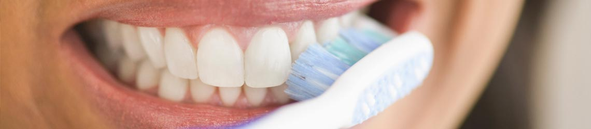
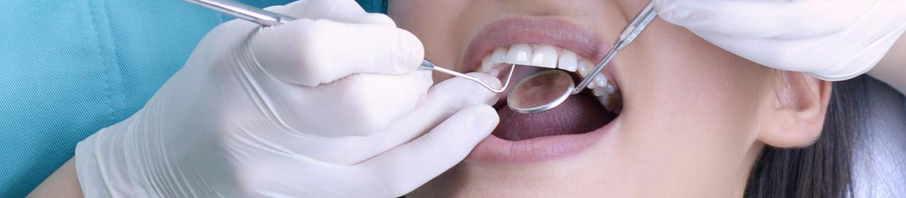
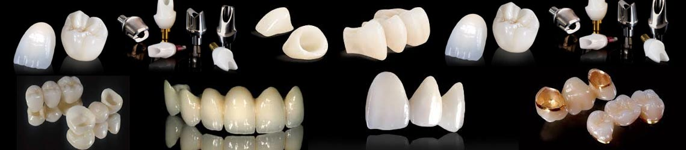
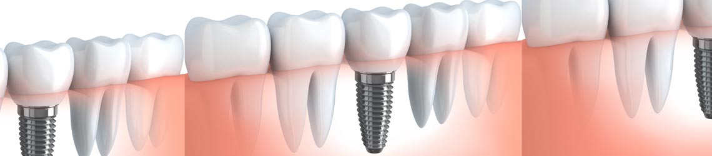
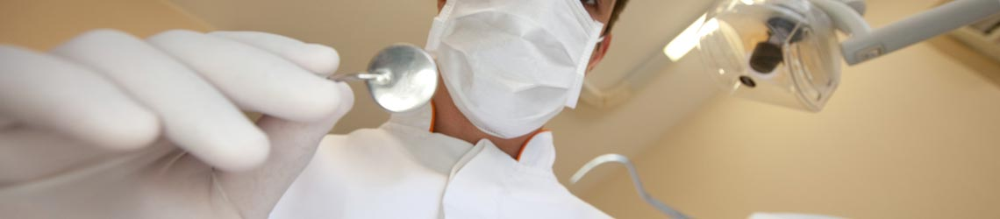
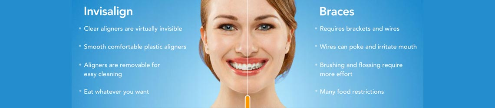
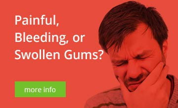

What we treat, explained plainly
From routine cleanings to implants and full-mouth rehabilitation — a guide to the services Adi's Dentalaya provides, so you know what to expect before you arrive.
Every treatment begins with finding out why
Adi's Dentalaya's services range from dental diagnosis to fillings, root canal treatment, extractions, crowns/cap and bridge work, dental implants, smile designing, orthodontic corrections, periodontal surgeries and advanced dental treatment procedures.
Your dentist examines your teeth and gums and explains the findings before anything is planned, so the option you choose is the one indicated for your mouth — not a one-size-fits-all package.


Dental hygiene & periodontal health
Cavities are not the number one cause of tooth loss — gum disease is. Professional cleanings remove plaque, tartar and stains with specialized instruments, protecting both your teeth and your gums.
- Early gum disease (gingivitis) is often reversible with daily brushing, flossing and regular professional cleanings
- Warning signs to watch for: persistent bad breath, red or swollen gums, bleeding while brushing, difficulty chewing, or loose teeth
- Depending on your oral health, you may be advised a cleaning every three months until the infection is controlled
Root canal therapy (endodontics)
Deep cavities and injuries can infect the pulp — the nerves and blood vessels inside a tooth. Root canal therapy removes the damaged pulp, cleans and seals the canal, and stops the infection from spreading to the bone around the tooth.
- Modern local anaesthesia makes the procedure comfortable — most people say it feels like a regular filling
- Symptoms that need evaluation: pain when chewing, throbbing pain, sensitivity to hot or cold, or gum tenderness and swelling
- A crown is usually recommended afterwards, as a treated tooth can become brittle without one

Cavities, fractures & cracks
Fillings restore teeth damaged by decay or injury. Left alone, a cavity, crack or fracture can lead to infection, gum disease and loose teeth — so early detection is worth a great deal.
- Material options include composites (tooth-coloured), silver amalgam, gold, porcelain and glass ionomer — each with trade-offs the dentist will explain
- Aching when chewing, sensitivity to hot/cold or sweet, visible holes or discolouration deserve a check-up
- Small to medium cavities may cause no pain at all — routine screening catches them before they grow

Crowns & bridges
A crown is a tooth-shaped cap that completely covers a damaged tooth, restoring its appearance, shape and alignment. Bridges replace missing teeth by anchoring one or more false teeth to crowns on either side of the gap.
- Materials include porcelain, metals and alloys, composite resin, or a mixture — chosen to match your tooth
- Bridge types: traditional, cantilever and resin-bonded — the right type depends on where the gap is and how much strain the area takes
- Cared-for crowns and bridges can last many years; you can still develop cavities beneath one, so hygiene and check-ups matter

Dental implant restoration
An implant is a replacement tooth root, typically made of titanium, that is placed into the jawbone and fuses with it. A post on the implant supports a crown, bridge or denture — replacement teeth that look natural and let you chew normally.
- Suitable for replacing one tooth or several; the surrounding bone is preserved instead of shrinking over time
- Good candidate? Healthy gums and enough jawbone — your dentist evaluates this, sometimes with x-rays, before planning
- Healing takes three to six months; regular follow-ups and excellent hygiene protect the investment

Complete & partial dentures
Dentures replace teeth lost to injury, disease or decay. Complete dentures restore a full upper or lower jaw; partial dentures fill gaps while you still have most of your natural teeth. Modern dentures are made to closely resemble natural teeth.
- Built from impressions over several visits — colour, shape and fit are adjusted with you before delivery
- Adjusting takes a little time: start with soft foods, chew on both sides, and expect extra saliva for a short while
- Follow the clinic's denture-maintenance routine — daily cleaning, resting tissues at night, and storing them in water

Orthodontic corrections
For older teenagers and adults, Invisalign straightens teeth with a series of clear, removable plastic aligners designed with 3D computer modelling. Fixed braces remain a proven option for many cases, including younger patients and complex bites.
- Each clear aligner moves teeth gradually over about two weeks; many patients complete treatment in six months to a year
- Aligners can be removed to eat, drink, brush and floss — and are much less noticeable than braces
- Retention after treatment is the key to keeping results — retainers are worn as prescribed, often nightly for at least a year

Periodontal surgery & advanced procedures
Periodontal surgeries treat gum disease that has moved beyond what a cleaning alone can resolve. The clinic also handles extractions — including wisdom teeth — pre-prosthetic surgery, frenectomies, and other advanced dental treatment procedures.
- Gum surgery is followed by a protective dressing and a short course of careful home care — the clinic publishes its post-operative instructions so nothing is left to guesswork
- Oral surgery cases are supported by a consultant specialist in oral & maxillofacial surgery
- Children's care is covered too: milk teeth matter, because every one of them holds space for the permanent tooth that follows

Dental myths, politely corrected
The clinic busts the fears that keep people away from care: scaling does not loosen healthy teeth; removing upper teeth does not harm the eyes; and milk teeth absolutely need treatment, because they hold the space for permanent teeth.
Not sure which treatment you need? Start with a consultation.
Share your details once, and the clinic will reach back to confirm a suitable time during opening hours.